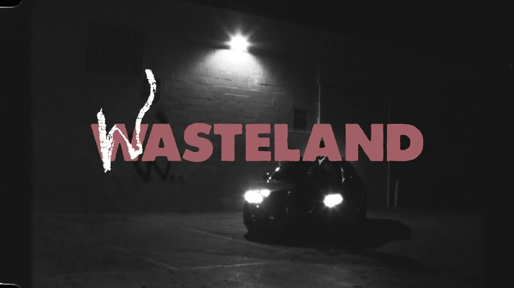

HIS BANGERS
- All mine
- Dead man walking
- Trust
HIS CAREER
Christopher Brent Wood (born September 19, 1995), known professionally as Brent Faiyaz, is an American singer, songwriter, and record producer. He rose to prominence after he was featured on the GoldLink single "Crew" alongside Shy Glizzy in 2016, which was certified 5 times Platinum by the RIAA, and earned him a nomination for the Grammy Award for Best Rap/Sung Collaboration.
Faiyaz started making music at the age of 12. His parents were not always understanding of his dreams as a musician, which Faiyaz said was warranted as he was "always distracted" by his love for music. Faiyaz has referred to Lauryn Hill as his biggest influence. When speaking to Fact, Faiyaz stated "It was Lauryn Hill who inspired me to start singing from early on". He has also cited artists such as Currensy, Lil Wayne, Curtis Mayfield, and Gil Scott-Heron among his inspirations.
In 2021, his singles, "Wasting Time" featuring Drake and The Neptunes, "Gravity" with DJ Dahi featuring Tyler, the Creator, and "Mercedes", all earned him entries on the Billboard Hot 100. Faiyaz's second album Wasteland debuted at number two on the Billboard 200 chart.
BEST COLLABORATIONS
- Tyler The Creator
- Tems
- Meek Mill
HIS SOCIAL MEDIAS


LISTEN TO HIS NEW ALBUM
Click here